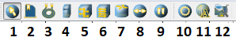
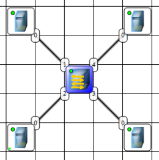
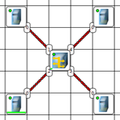
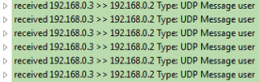
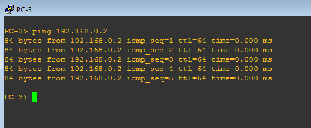

Лабораторная работа №2
Тема
Создание простой сети в NetEmul.
Цель работы
Научиться создавать простую сеть, состоящую из коммутаторов, концентраторов и компьютеров.
Немного про NetEmul
В данной работе необходимо изучить основы построения сетей. Программа NetEmul позволяет наглядно (при помощи анимации) продемонстрировать работу некоторых процессов в сетях.
Функционал NetEmul небольшой, но достаточный на начальном этапе знакомства с компьютерными сетями.
В дальнейшем для построения и изучения сетей будет использоваться GNS3 или Eve-NG, функционал и возможности которых приближены к реальным сетям.
Ниже приведено описание элементов программы NetEmul.
Панель элементов и действий в NetEmul

Описание элементов NetEmul описание-элементов-netemul
| № | Название |
|---|---|
| 1 | Элемент управления |
| 2 | Комментарий |
| 3 | Провод |
| 4 | ПК |
| 5 | Концентратор |
| 6 | Коммутатор |
| 7 | Маршрутизатор |
| 8 | Отправка данных (для тестирования) |
| 9 | Управление анимацией |
| 10 | Настройка выделенного элемента |
| 11 | Просмотр ARP-таблицы |
| 12 | Просмотр передаваемых данных |
Описание сети
Схемы для изучения
Часть 1 схема-сети
 
Часть 2 схема-сети-2

Адресация
| Адрес сети | Маска сети |
|---|---|
| 172.16.<№ в группе>.0 | 255.255.255.0 (/24) |
Порядок выполнения работы
Часть 1
-
Изучите интерфейс и элементы программы NetEmul.
-
Создайте две схемы, как на рисунке.
- Сначала используйте концентратор, а потом проделайте дествия для коммутатора.
- Две части сети можно разместить на одном проекте.
-
Назначьте IP-адреса для всех ПК в соответствии с указанной адресацией.
-
Отправьте данные с одного ПК на другой и понаблюдайте за анимацией. «Данные» должны перейти от отправителя к получателю.
Сделайте выводы.
Также можно выделить коммутатор или концентратор и включить просмотр передаваемых данных (элемент №12). Пример передаваемых информации показан на рисунке ниже. Можно получить более подробную информацию, раскрыв интересующую строку.

-
Выделите коммутатор и изучить ARP-таблицу (элемент №11).
Вопрос
Какие данные в ней находятся, и как они там появляются?
Часть 2
-
Запустите GNS3 и постройте изучаемую схему. Количество VPCS (виртуальный ПК) должно быть не менее 1 для каждого коммутатора.
-
Назначьте IP-адреса всем ПК (воспользуйтесь командой «?» на VPCS, чтобы посмотреть синтаксис команды) и укажите их на схеме с помощью текстовых элементов (комментариев).
Пример назначения IP-адреса VPCS
гдеip 192.168.1.1/24- 192.168.1.1 - IP-адрес устройства
- 24 - длина маски сети
-
Запустите программу Wireshark на участке сети между коммутаторами.
-
Воспользуйтесь утилитой ping для проверки доступности компьютеров, находящихся по разные стороны от коммутаторов (пример приведен ниже).

-
Приведите результат программы Wireshark, отфильтровав пакеты по протоколам ARP и ICMP.
Вопрос
Можно ли увидеть трафик отправленногог эхо-запроса между компьютерами, подключенными к одному коммутатору?
-
-
Подключите еще один ПК.
- Назначьте новому ПК уникальный IP-адрес.
- Запустите Wireshark на том же участке сети.
- Выведите результат программы Wireshark, отфильтровав пакеты по протоколу ARP.
Сделайте выводы.
-
Подключите еще один ПК.
- Назначьте новому ПК IP-адрес, который уже назначен другому ПК.
- Запустите Wireshark на том же участке сети.
- Выведите результат программы Wireshark, отфильтровав пакеты по протоколу ARP.
Сделайте выводы.